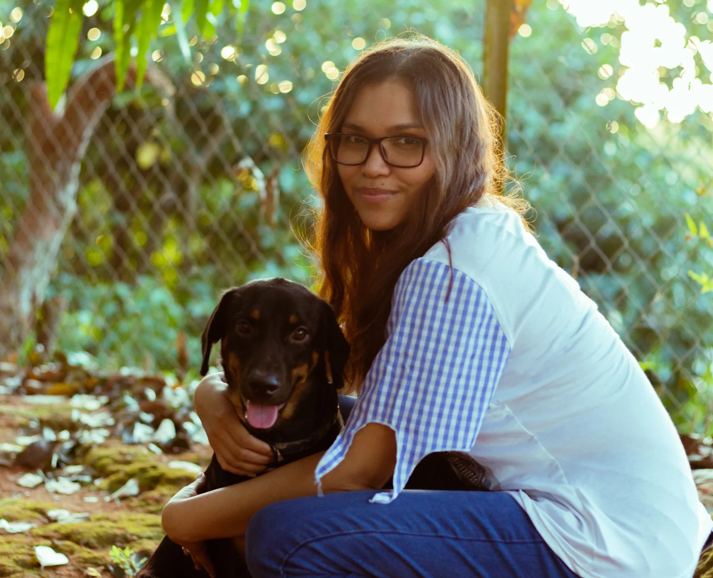
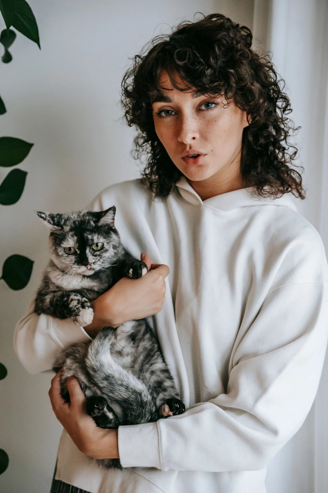
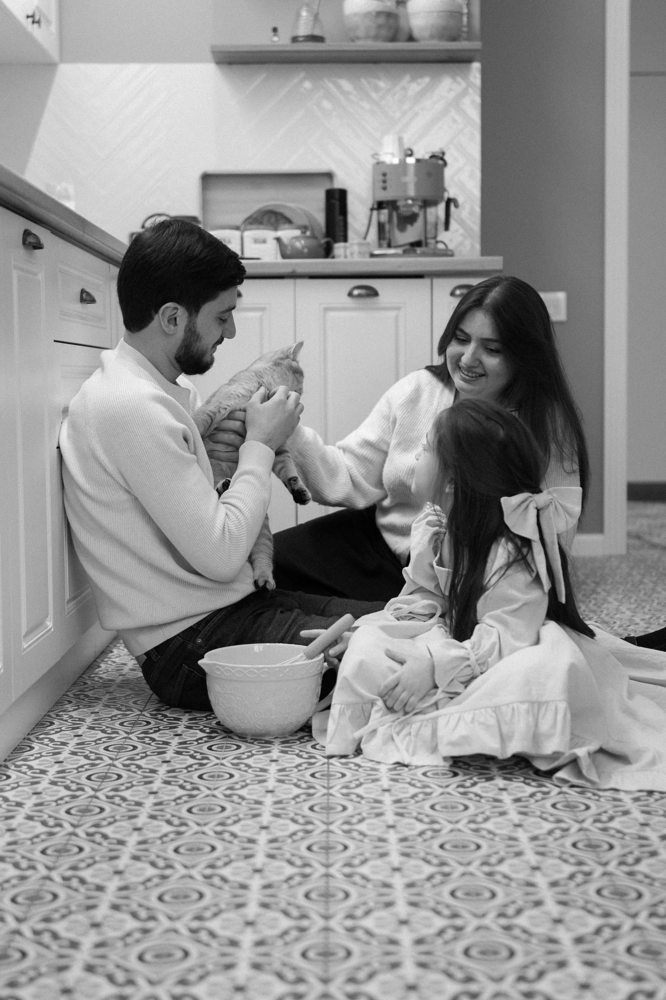
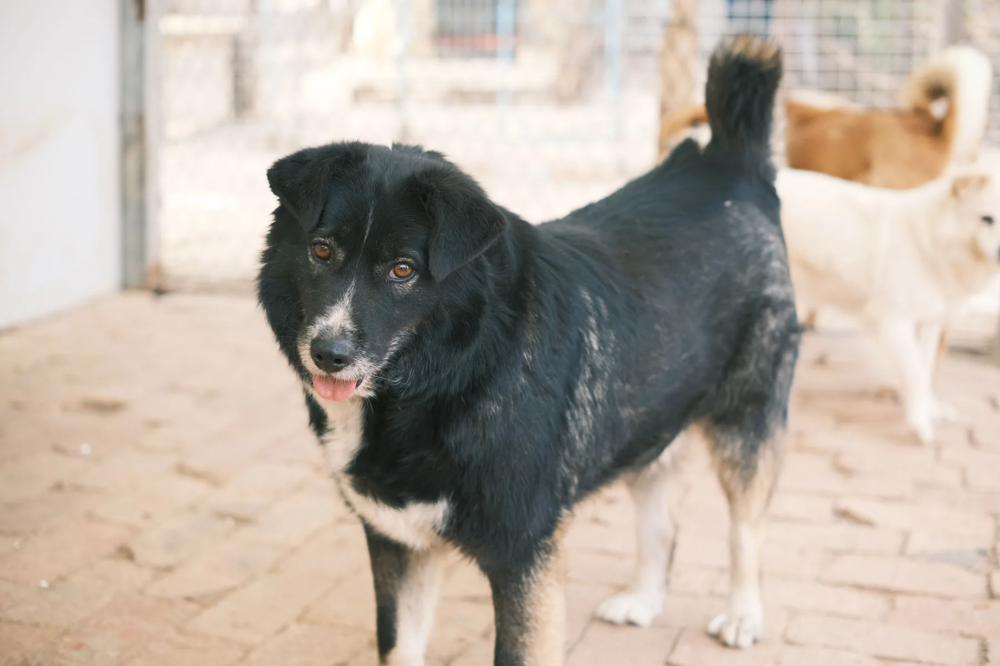
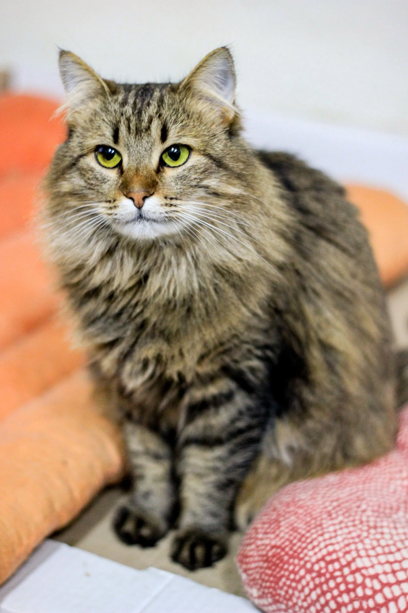
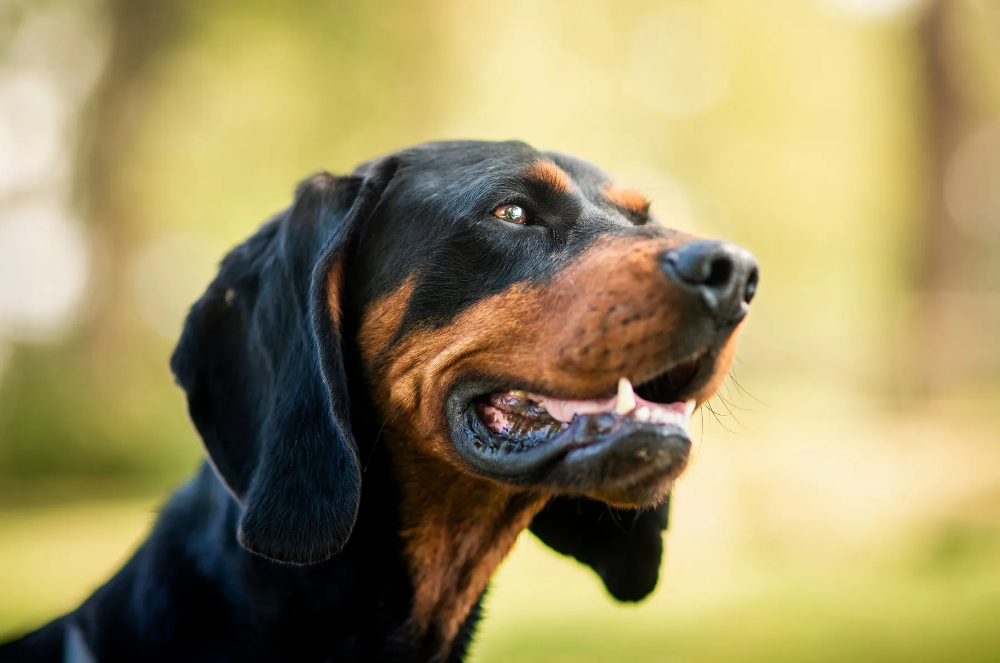
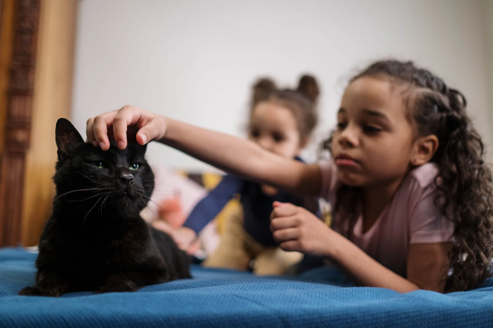
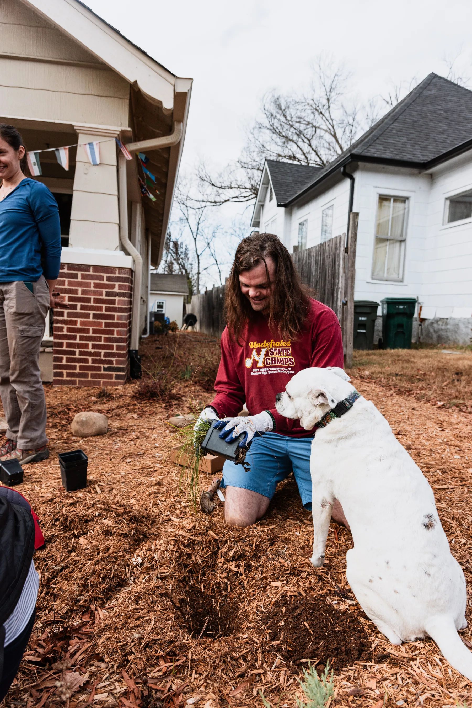

Adopt, do not impulse-buy
Choose a pet whose health, energy, behaviour, and routine fit your real life.
Responsible adoption · India
Adopt with care. Love for life.
Meet demonstration pet profiles, understand responsible adoption, and discover practical ways to foster, volunteer, or report an animal in need.



Choose a pet whose health, energy, behaviour, and routine fit your real life.
Speak with the caregiver about history, compatibility, veterinary care, and transition support.
Plan safe transport, identification, food, veterinary follow-up, and a quiet settling space.
There’s joy in every corner, waiting for someone just like you!

Male Bruno 2 years · Mumbai
Female Miso 1.5 years · Pune
Male Leo 3 years · Thane
Female Olive 1 year · Thane
Female Coco 2.5 years · MumbaiAll animals shown are fictional demonstration profiles using licensed stock photography.
Ready to stand up for pets?
“Saving one animal might not change the world, but it will change their forever.”
This could be you and yours
Quiet routines · Indoor home
Active home · Patient training
Affectionate · Indoor only
People-friendly · Daily walks
“Every day, thousands of animals begin their wait for a loving home to call their own.”
Heart says “yes”, head says “can I?”
A beautiful profile is only the beginning. Learn about preparation, health, behaviour, and the first days at home.
Learn moreOur own tale of joy
“PawsHome brings adoption profiles, rescue reporting, foster pathways, and pet-care guidance into one simple experience. The goal is not to rush adoption—it is to help people ask better questions before making a lifelong decision.”
Because every pet is someone’s story →